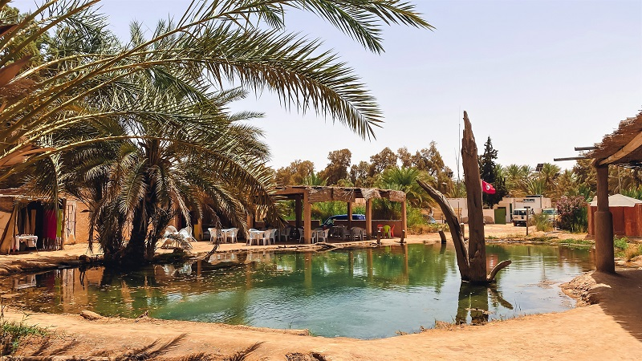
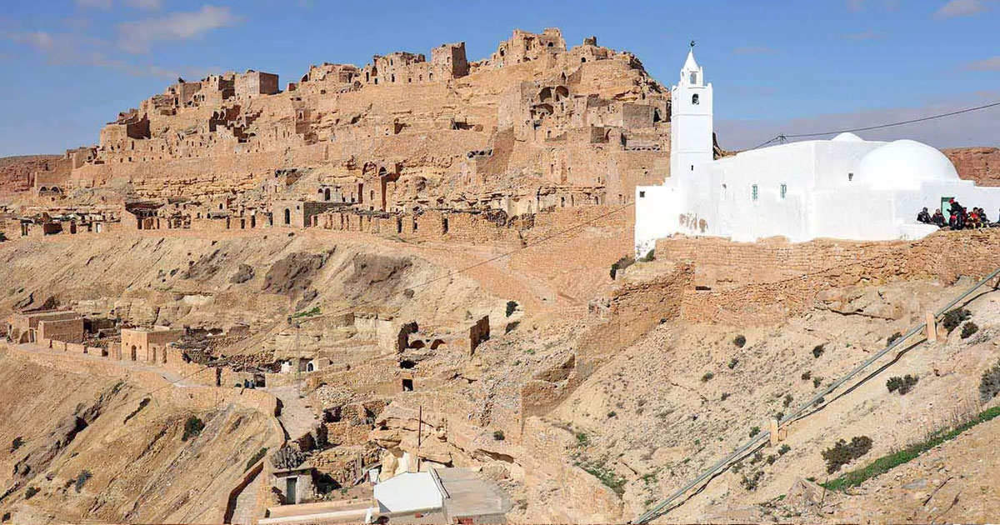
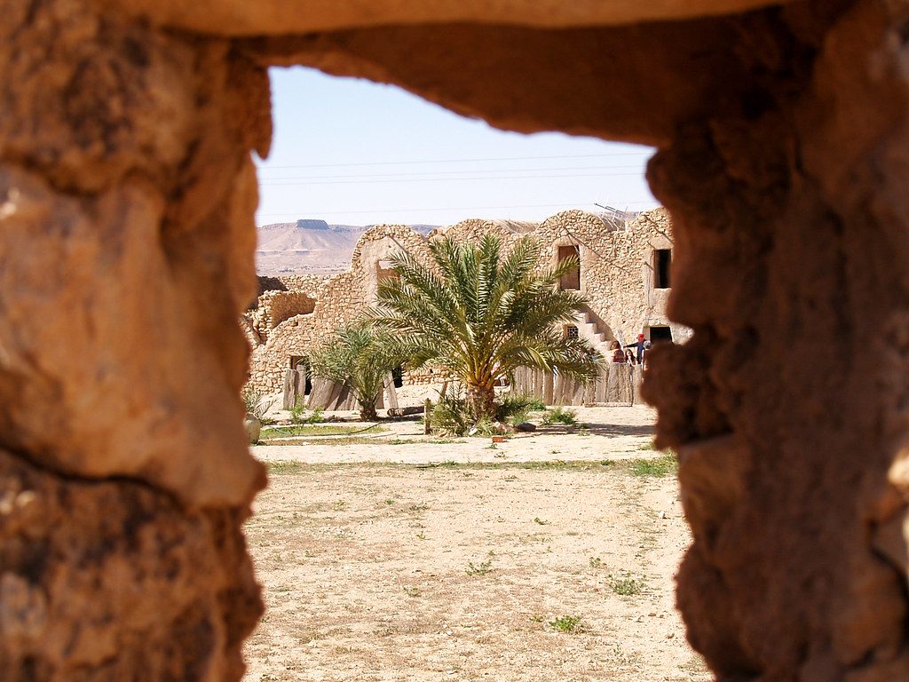

Tataouine, une oasis dans le sud-est de la Tunisie. Elle est connue pour son importance historique et son architecture unique, notamment les habitations troglodytiques qui protègent de la chaleur du désert.
Le nom « Tataouine » se traduit par « sources d'eau » en berbère, et la région a été un relais important pour les caravanes depuis l'Antiquité. L'histoire de la ville comprend son implantation berbère ancienne et plus tard l'influence ottomane, ce qui en fait un site culturel et historique riche.
Gabès représente ainsi un mélange remarquable de nature, histoire, culture et traditions, faisant d’elle une destination incontournable du sud tunisien.
source : wikipedia
Les fameux Destinations
Ksar Ghilane
Ksar Ghilane est une oasis du sud de la Tunisie située sur la limite est du Grand Erg oriental.Réputée être la plus méridionale des oasis tunisiennes et
l'une des portes du désert du Sahara tunisien, une source d'eau chaude affleure dans l'oasis.
Cette source, dans laquelle il est le plus souvent possible de se baigner, aurait des vertus thermales.

La mosquée des Sept Dormants
La mosquée des Sept Dormants, située à Chenini-Tataouine, est un site historique et religieux fascinant. Elle est connue pour abriter la grotte où se sont réfugiés un groupe de croyants qui se sont endormis pendant 300 ans pour se réveiller dans une période plus clémente. Le site est également célèbre pour ses tombes géantes, qui sont considérées comme des saints partagés par les chrétiens et les musulmans. Les Sept Dormants, ou Ahl-al-Kahf, sont mentionnés dans la sourate XVIII du Coran, et leur récit est souvent associé à des légendes locales. La mosquée et le cimetière environnants offrent une expérience mystique unique, où l'on peut profiter de la beauté architecturale et de l'histoire fascinante de cette région.

Ksar Hadada
Ksar Hadada est un ksar situé dans le sud de la Tunisie, à proximité de Ghomrassen et de Tataouine. Ce ksar, qui a été utilisé comme grenier fortifié, a été restauré et transformé en hôtel, attirant de nombreux touristes. Il est connu pour avoir servi de décor pour le quartier des esclaves de Mos Espa dans le film Star Wars, épisode I : La Menace fantôme. Le ksar est entouré par une chaîne montagneuse et a un climat semi-aride, avec des températures pouvant atteindre 50°C en été.
